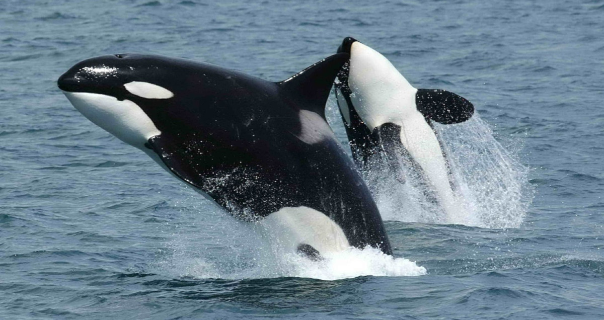
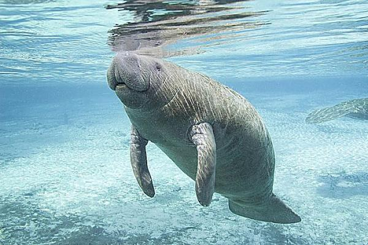
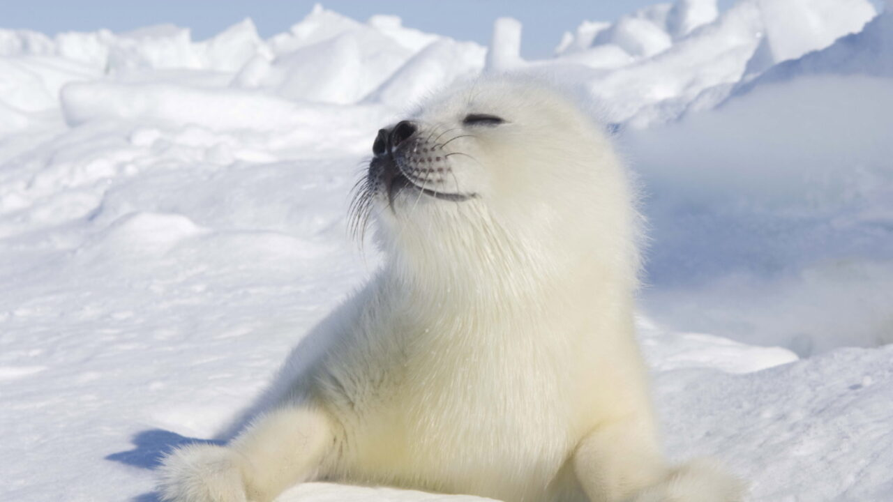
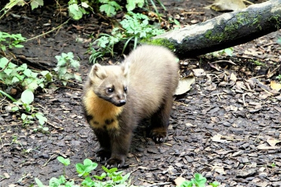

Mamíferos
Los cetáceos pueden clasificarse en dos grupos principales: las ballenas barbadas (mysticetes) y las ballenas dentadas (odontocetes). Pasan toda la vida en el agua, por ello tienen un estilo de vida completamente acuático. Actualmente existen más de 70 especies diferentes de cetáceos.
Al igual que los cetáceos, los sirenios pasan toda la vida en el mar. Además, son los únicos mamíferos marinos completamente herbívoros. Estos animales, que son físicamente parecidos a las focas y las morsas, en realidad están emparentados con los elefantes. Son grandes, pesados y suelen moverse lentamente por la costa.
Por otro lado, los pinnípedos pasan la mayor parte de su vida nadando o comiendo en el agua. Estos animales carnívoros usan sus aletas para moverse tanto en el agua como en la tierra. Además, suelen buscar la tierra o los icebergs para dar a luz a sus crías, descansar, mudar su pelaje o esconderse de los depredadores.
Los fisípedos, a diferencia del resto de mamíferos marinos, suelen pasar la mayor parte de su tiempo en la tierra y solo una pequeña parte del tiempo en el agua, sobre todo para cazar su alimento (crías de focas o renos).
